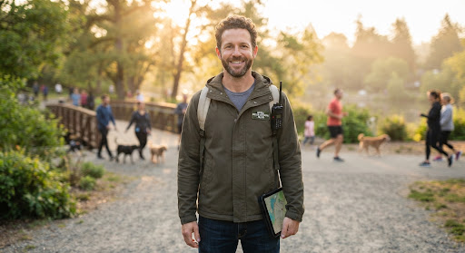

Family
Sarah K.

Guide
David M.
diversity_1
142 Nearby Responders
sensors
Step 02 of 03
Mutual Rescue Network
Family members can publish a request, and volunteers can help share critical information quickly.